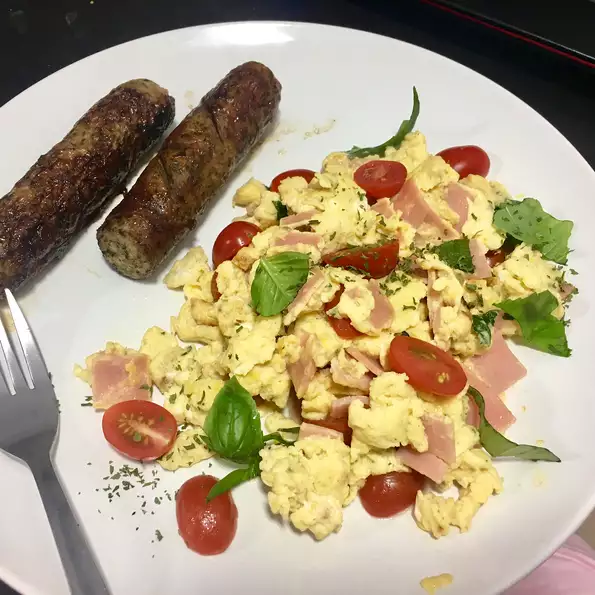

HUEVOS REVUELTOS DE VERANO

Esta receta es un clasico para preparar unos sabrosos huevos que acompañen tus desayunos
Cocinar no se trata de hacer siempre lo correcto, y este revuelo de verano es un ejemplo perfecto.
Agregar tomates cherry dulces y jugosos a un revuelto sabe muy bien, pero no es una práctica común ya que tener un charco de líquido debajo de los huevos se considera una mala forma. No me importa;
tengo tostadas Trate de encontrar un queso feta de leche de cabra para esto; ¡es impresionante!
Ingredientes
- 3 huevos grandes
- 1 pimenton rojo
- 5 tomates cherry
- 2 cucharadas de queso feta desmenuzado
- 1 cucharada de hojas de albahaca fresca
- Aceite de oliva
- 1 pizca de sal marina
Preparación
- Batir los huevos y las hojuelas de pimiento rojo en un tazón. Agregue los tomates,
el queso feta y las hojas de albahaca a la mezcla de huevo.
- Caliente el aceite de oliva en una sartén antiadherente a fuego alto hasta que el aceite comience a brillar.
Vierta la mezcla de huevo en aceite caliente y cocine, sin revolver, durante 5 segundos.
- Cocine y revuelva la mezcla de huevo hasta que los huevos estén revueltos y suaves,
aproximadamente 30 segundos. Transfiera los huevos a un plato y espolvoree con sal marina.